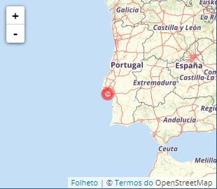
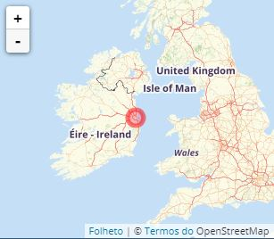
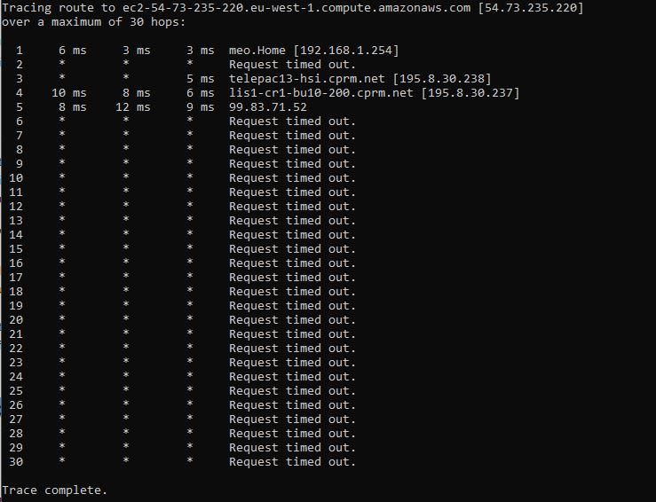
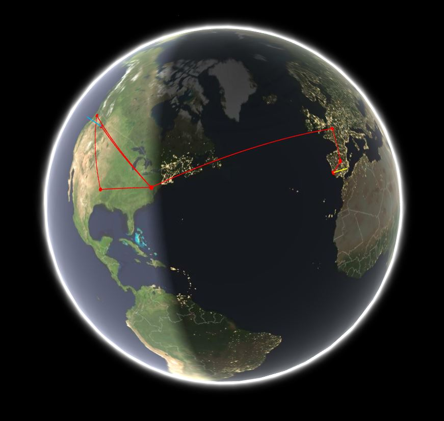
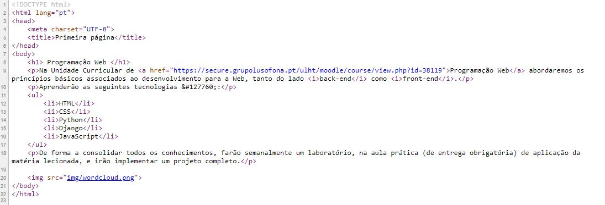
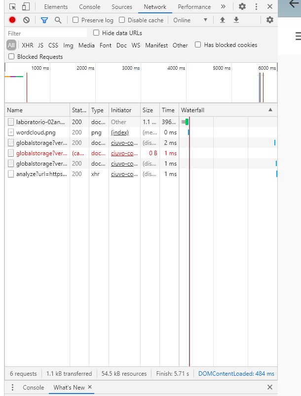

Ano Letivo: 2020/2021
Trabalho realizado: Marisa Santos a21903611
Docente: Rui Santos
Com a obtenção da informação do número do IP do computador foi possível saber onde se localizava, neste caso o mapa a seguir mostra mais concretamente onde.
O mesmo processo foi realizado para a obtenção da localização do IP que corresponde ao servidor Heroku, o mapa a seguir mostra mais concretamente onde.
Através da linha de comandos é possível rastrear a rota que os pacotes de IP fazem, a imagem a seguir mostra isso mesmo.
Através da ferramenta GeoTraceroute é possível ver essa mesma rota mas neste caso num mapa do mundo.
Esta rota passa em quatro países e em nove cidades espalhadas pelo o mundo sendo estas:
Para visualizar o código recebido, bastou clicar no botão direito do rato e selecionar "ver código fonte" desta forma foi possível verificar que o código escrito estava correto.
Para inspeccionar ficheiros descarregados pelo browser, basta clicar, como já anteriormente feito, no botão direito do rato, assim é possível analisar uma grande variedade de informação.
De seguida seleciona-se a barra network, aqui irá aparecer os vários ficheiros que pertencem à "página".
